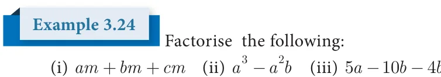
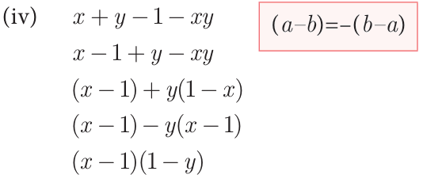
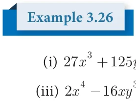
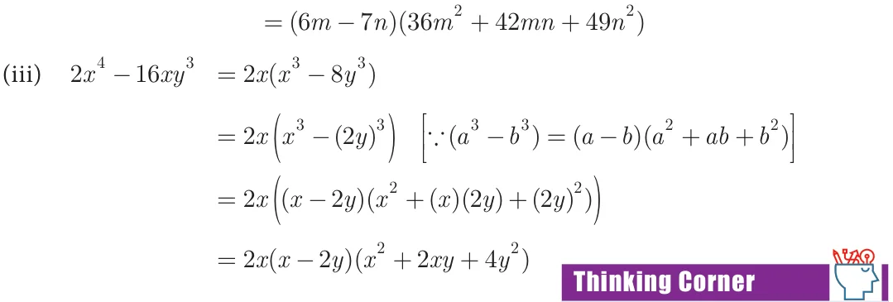

Factorisation is the reverse of multiplication.
For Example : Multiply 3 and 5; we get product 15.
Factorise 15; we get factors 3 and 5.
For Example : Multiply (x \(+ 2)\) and (x \(+ 3)\); we get product \(x + 5x + 6\).
Factorise \(x + 5x + 6\) ; we get factors (x \(+ 2)\) and (x \(+ 3)\).
(x \(+ 3)(x + 2)\) (x \(+ 3)(x + 2)\)
x(x \(+ 2)+ 3(x + 2)\) x(x \(+ 2)+ 3(x + 2)\)
\(x + 2x + 3x + 6 x + 2x + 3x + 6\)
\(x + 5x + 6 x + 5x + 6\)
Thus, the process of converting the given higher degree polynomial as the product of factors of its lower degree, which cannot be further factorised is called factorisation.
Two important ways of factorisation are :
- (i)By taking common factor (ii) By grouping them
ab \(+ac a +b -\) pa - pb \(a \times b +a \times c\) (a \(+b) - p\) a( +b) group in pairs a(b +c) factored form (a \(+b)(1 -\) p) factored form
When a polynomial is factored, we “factored out” the common factor.

Factorise the following:
am \(+bm + - - -\) bc \(+ 2ac\) (iv) \(x +y - - 1\) xy
Solutions
- (i)am +bm +cm (ii) a -a b
am +bm +cm a ⋅a \(- a\) ⋅b group in pairs
m(a +b +c) factored form \(a \times\) (a - b) factored form
- (iii)\(5a - 10b - 4bc + 2ac + - -\) xy

\(5a - 10b + 2ac - 4bc - + -\) xy \(5(a - 2b)+ 2c\) a( \(- 2b)\) ( \(- )+\) ( - ) (a \(- 2b)(5 + 2c)\) ( - )- ( - )
3.5.1 Factorisation using Identity
- (i)\(a + 2ab +b \equiv\) (a +b) (ii) \(a - 2ab +b \equiv\) (a - b)
- (iii)\(a - b \equiv\) (a \(+b)(a -\) b) (iv)a \(+b +c + 2ab + 2bc + 2ca \equiv\) (a +b +c)
- (v)\(a +b \equiv\) (a \(+b)(a -\) ab +b ) (vi) \(a - b \equiv\) (a - b)(a +ab +b )
- (vii)\(a +b +c -\) 3abc \(\equiv\) (a \(+b +c)(a +b +c -\) ab - bc - ca)
Note
(a \(+b) +(a -\) b) \(= 2(a +b\) ); \(a - b =\) (a +b )(a \(+b)(a -\) b)
(a \(+b) -\) (a - b) \(= 4ab\) ; \(a - b =\) (a \(+b)(a -\) b)(a - ab +b )(a +ab +b )
Progress Check
1 1 _{2} 1 Prove: (i) a + a+ a - a= 2a \(+ a^{2}\) (ii) a \(+ \frac{11}{aa}\) - a - =4
Example 3.25
Factorise the following:
- (i)\(9x +12xy + 4y\) (ii) \(25a - 10a +1\) (iii) \(36m - 49n\)
- (iv)x -x (v) x -16 (vi) \(x + 4y + 9z - 4xy +12yz - 6xz\)
Solution
- (i)\(9x +12xy + 4y = (3x) + 2(3x)(2y)+(2y)\) [ \(a + 2ab +b =\) (a +b) ]
\(= (3x + 2y)\)
- (ii)\(25a - 10a +1 = (5a) - 2 5( a)(1)+1\)
\(= (5a - 1)^{2}\) \(a^{2} - 2ab +b^{2} =\) (a \(- b)^{2}\)
- (iii)\(36m - 49n\) . \(= (6m) -(7n)\)
\(= (6m + 7n)(6m - 7n)\) \(a^{2} - b^{2} =\) (a \(+b)(a -\) b)
- (iv)\(x - x =\) x(x \(- 1)\)
= x(x \(- 1\) )
= x(x \(+1)(x - 1)\)
- (v)\(x ^{4} -16 = x ^{4} -2^{4}\) \(a ^{4} - b^{4} =(a ^{2} +b^{2})(a +b)(a -\) b)
= (x \(+ 2\) )(x \(- 2\) )
= (x \(+ 4)(x + 2)(x - 2)\)
- (vi)\(x + 4y + 9z - 4xy +12yz - 6xz\)
= ( - x) \(+(2y) +(3z) + 2( - x)(2y)+ 2 2( y)(3z)+ 2(3z)( -\) x)
= ( \(- +x 2y + 3z)\) (or) (x \(-2y - 3z)\)

Factorise the following:
+ (ii) \(216m - 343n\)
- xy (iv) \(8x + 27y + 64z -\) 72xyz
Solution
\(+ = (3x)^{3} +(5y)^{3}\) \((a^{3} +b^{3}) =\) (a \(+b)(a^{2} -\) ab \(+b^{2})\)
\(= (3x + 5y)((3x) - (3x)(5y)+(5y)\) )
\(= (3x + 5y)(9x - 15xy + 25y\) )
- (ii)\(216m^{3} - 343n^{3} = (6m)^{3} - (7n)^{3}\) \((a^{3} - b^{3}) =\) (a \(- b)(a^{2} +ab +b^{2})\)
\(= (6m - 7n)((6m) +(6m)(7n)+(7n)\) )

= ( - )( + mn + )
- xy = ( - )
= ( - ( ) ) ( - ) = ( - )( \(+ab +\) ) = (( - )( +( )( )+( ) ))
= ( - )( + xy + )
\(+ + -\) xyz
= ( ) +( ) +( ) \(- 3 2(\) )( )( )
= ( \(+ +\) )( \(+ + -\) xy - yz - xz)